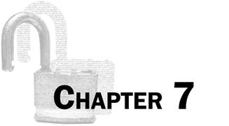

Topics Covered In This Chapter:
· Kerckhoffs’s Principle and Shannon’s Maxim
· The brute-force technique
· The range() function
· String formatting (string interpolation)
Hacking Ciphers
We can hack the Caesar cipher by using a cryptanalytic technique called “brute-force”. Because our code breaking program is so effective against the Caesar cipher, you shouldn’t use it to encrypt your secret information.
Ideally, the ciphertext would never fall into anyone’s hands. But Kerckhoffs’s Principle (named after the19th-century cryptographer Auguste Kerckhoffs) says that a cipher should still be secure even if everyone else knows how the cipher works and has the ciphertext (that is, everything except the key). This was restated by the 20th century mathematician Claude Shannon as Shannon’s Maxim: “The enemy knows the system.”
|
|
|
|
Figure 7-1. Auguste Kerckhoffs January 19, 1835 - August 9, 1903 |
Figure 7-2. Claude Shannon April 30, 1916 - February 24, 2001 |
|
“A cryptosystem should be secure even if everything about the system, except the key, is public knowledge.” |
“The enemy knows the system.” |

The Brute-Force Attack
Nothing stops a cryptanalyst from guessing one key, decrypting the ciphertext with that key, looking at the output, and if it was not the correct key then moving on to the next key. The technique of trying every possible decryption key is called a brute-force attack. It isn’t a very sophisticated hack, but through sheer effort (which the computer will do for us) the Caesar cipher can be broken.
Source Code of the Caesar Cipher Hacker Program
Open a new file editor window by clicking on File ► New Window. Type in the following code into the file editor, and then save it as caesarHacker.py. Press F5 to run the program. Note that first you will need to download the pyperclip.py module and place this file in the same directory as the caesarHacker.py file. You can download this file from http://invpy.com/pyperclip.py.
Source code for caesarHacker.py
1. # Caesar Cipher Hacker
2. # http://inventwithpython.com/hacking (BSD Licensed)
3.
4. message = 'GUVF VF ZL FRPERG ZRFFNTR.'
5. LETTERS = 'ABCDEFGHIJKLMNOPQRSTUVWXYZ'
6.
7. # loop through every possible key
8. for key in range(len(LETTERS)):
9.
10. # It is important to set translated to the blank string so that the
11. # previous iteration's value for translated is cleared.
12. translated = ''
13.
14. # The rest of the program is the same as the original Caesar program:
15.
16. # run the encryption/decryption code on each symbol in the message
17. for symbol in message:
18. if symbol in LETTERS:
19. num = LETTERS.find(symbol) # get the number of the symbol
20. num = num - key
21.
22. # handle the wrap-around if num is 26 or larger or less than 0
23. if num < 0:
24. num = num + len(LETTERS)
25.
26. # add number's symbol at the end of translated
27. translated = translated + LETTERS[num]
28.
29. else:
30. # just add the symbol without encrypting/decrypting
31. translated = translated + symbol
32.
33. # display the current key being tested, along with its decryption
34. print('Key #%s: %s' % (key, translated))
You will see that much of this code is the same as the code in the original Caesar cipher program. This is because the Caesar cipher hacker program does the same steps to decrypt the key.
Sample Run of the Caesar Cipher Hacker Program
Here is what the Caesar cipher program looks like when you run it. It is trying to break the ciphertext, “GUVF VF ZL FRPERG ZRFFNTR.” Notice that the decrypted output for key 13 is plain English, so the original encryption key must have been 13.
Key #0: GUVF VF ZL FRPERG ZRFFNTR.
Key #1: FTUE UE YK EQODQF YQEEMSQ.
Key #2: ESTD TD XJ DPNCPE XPDDLRP.
Key #3: DRSC SC WI COMBOD WOCCKQO.
Key #4: CQRB RB VH BNLANC VNBBJPN.
Key #5: BPQA QA UG AMKZMB UMAAIOM.
Key #6: AOPZ PZ TF ZLJYLA TLZZHNL.
Key #7: ZNOY OY SE YKIXKZ SKYYGMK.
Key #8: YMNX NX RD XJHWJY RJXXFLJ.
Key #9: XLMW MW QC WIGVIX QIWWEKI.
Key #10: WKLV LV PB VHFUHW PHVVDJH.
Key #11: VJKU KU OA UGETGV OGUUCIG.
Key #12: UIJT JT NZ TFDSFU NFTTBHF.
Key #13: THIS IS MY SECRET MESSAGE.
Key #14: SGHR HR LX RDBQDS LDRRZFD.
Key #15: RFGQ GQ KW QCAPCR KCQQYEC.
Key #16: QEFP FP JV PBZOBQ JBPPXDB.
Key #17: PDEO EO IU OAYNAP IAOOWCA.
Key #18: OCDN DN HT NZXMZO HZNNVBZ.
Key #19: NBCM CM GS MYWLYN GYMMUAY.
Key #20: MABL BL FR LXVKXM FXLLTZX.
Key #21: LZAK AK EQ KWUJWL EWKKSYW.
Key #22: KYZJ ZJ DP JVTIVK DVJJRXV.
Key #23: JXYI YI CO IUSHUJ CUIIQWU.
Key #24: IWXH XH BN HTRGTI BTHHPVT.
Key #25: HVWG WG AM GSQFSH ASGGOUS.
How the Program Works
caesarHacker.py
1. # Caesar Cipher Hacker
2. # http://inventwithpython.com/hacking (BSD Licensed)
3.
4. message = 'GUVF VF ZL FRPERG ZRFFNTR.'
5. LETTERS = 'ABCDEFGHIJKLMNOPQRSTUVWXYZ'
The hacker program will create a message variable that stores the ciphertext string the program tries to decrypt. The LETTERS constant variable contains every character that can be encrypted with the cipher. The value for LETTERS needs to be exactly the same as the value for LETTERS used in the Caesar cipher program that encrypted the ciphertext we are trying to hack, otherwise the hacker program won’t work.
The range() Function
caesarHacker.py
7. # loop through every possible key
8. for key in range(len(LETTERS)):
Line 8 is a for loop that does not iterate over a string value, but instead iterates over the return value from a call to a function named range(). The range() function takes one integer argument and returns a value of the range data type. These range values can be used in for loops to loop a specific number of times. Try typing the following into the interactive shell:
>>> for i in range(4):
... print('Hello')
...
Hello
Hello
Hello
Hello
>>>
More specifically, the range value returned from the range() function call will set the for loop’s variable to the integers 0 up to, but not including, the argument passed to range(). Try typing the following into the interactive shell:
>>> for i in range(6):
... print(i)
...
0
1
2
3
4
5
>>>
Line 8 is a for loop that will set the key variable with the values 0 up to (but not including) 26. Instead of hard-coding the value 26 directly into our program, we use the return value from len(LETTERS) so that if we modify LETTERS the program will still work. See the “Encrypt Non-Letter Characters” section in the last chapter to read why.
So the first time the program execution goes through this loop, key will be set to 0 and the ciphertext in message will be decrypted with key 0. (The code inside the for loop does the decrypting.) On the next iteration of line 8’s for loop, key will be set to 1 for the decryption.
You can also pass two integer arguments to the range() function instead of just one. The first argument is where the range should start and the second argument is where the range should stop (up to but not including the second argument). The arguments are separated by a comma:
>>> for i in range(2, 6):
... print(i)
...
2
3
4
5
>>>
The range() call evaluates to a value of the “range object” data type.
Back to the Code
caesarHacker.py
7. # loop through every possible key
8. for key in range(len(LETTERS)):
9.
10. # It is important to set translated to the blank string so that the
11. # previous iteration's value for translated is cleared.
12. translated = ''
On line 12, translated is set to the blank string. The decryption code on the next few lines adds the decrypted text to the end of the string in translated. It is important that we reset translated to the blank string at the beginning of this for loop, otherwise the decrypted text will be added to the decrypted text in translated from the last iteration in the loop.
caesarHacker.py
14. # The rest of the program is the same as the original Caesar program:
15.
16. # run the encryption/decryption code on each symbol in the message
17. for symbol in message:
18. if symbol in LETTERS:
19. num = LETTERS.find(symbol) # get the number of the symbol
Lines 17 to 31 are almost exactly the same as the code in the Caesar cipher program from the last chapter. It is slightly simpler, because this code only has to decrypt instead of decrypt or encrypt.
First we loop through every symbol in the ciphertext string stored in message on line 17. On each iteration of this loop, line 18 checks if symbol is an uppercase letter (that is, it exists in the LETTERS constant variable which only has uppercase letters) and, if so, decrypts it. Line 19 locates where symbol is in LETTERS with the find() method and stores it in a variable called num.
caesarHacker.py
20. num = num - key
21.
22. # handle the wrap-around if num is 26 or larger or less than 0
23. if num < 0:
24. num = num + len(LETTERS)
Then we subtract the key from num on line 20. (Remember, in the Caesar cipher, subtracting the key decrypts and adding the key encrypts.) This may cause num to be less than zero and require “wrap-around”. Line 23 checks for this case and adds 26 (which is what len(LETTERS) returns) if it was less than 0.
caesarHacker.py
26. # add number's symbol at the end of translated
27. translated = translated + LETTERS[num]
Now that num has been modified, LETTERS[num] will evaluate to the decrypted symbol. Line 27 adds this symbol to the end of the string stored in translated.
caesarHacker.py
29. else:
30. # just add the symbol without encrypting/decrypting
31. translated = translated + symbol
Of course, if the condition for line 18’s condition was False and symbol was not in LETTERS, we don’t decrypt the symbol at all. If you look at the indentation of line 29’s else statement, you can see that this else statement matches the if statement on line 18.
Line 31 just adds symbol to the end of translated unmodified.
String Formatting
caesarHacker.py
33. # display the current key being tested, along with its decryption
34. print('Key #%s: %s' % (key, translated))
Although line 34 is the only print() function call in our Caesar cipher hacker program, it will print out several lines because it gets called once per iteration of line 8’s for loop.
The argument for the print() function call is something we haven’t used before. It is a string value that makes use of string formatting (also called string interpolation). String formatting with the %s text is a way of placing one string inside another one. The first %s text in the string gets replaced by the first value in the parentheses after the % at the end of the string.
Type the following into the interactive shell:
>>> 'Hello %s!' % ('world')
'Hello world!'
>>> 'Hello ' + 'world' + '!'
'Hello world!'
>>> 'The %s ate the %s that ate the %s.' % ('dog', 'cat', 'rat')
'The dog ate the cat that ate the rat.'
>>>
String formatting is often easier to type than string concatenation with the + operator, especially for larger strings. And one benefit of string formatting is that, unlike string concatenation, you can insert non-string values such as integers into the string. Try typing the following into the interactive shell:
>>> '%s had %s pies.' % ('Alice', 42)
'Alice had 42 pies.'
>>> 'Alice' + ' had ' + 42 + ' pies.'
Traceback (most recent call last):
File "<stdin>", line 1, in <module>
TypeError: Can't convert 'int' object to str implicitly
>>>
Line 34 uses string formatting to create a string that has the values in both the key and translated variables. Because key stores an integer value, we’ll use string formatting to put it in a string value that is passed to print().
Practice Exercises, Chapter 7, Set A
Practice exercises can be found at http://invpy.com/hackingpractice7A.
Summary
The critical failure of the Caesar cipher is that there aren’t that many different possible keys that can be used to encrypt a message. Any computer can easily decrypt with all 26 possible keys, and it only takes the cryptanalyst a few seconds to look through them to find the one that is in English. To make our messages more secure, we will need a cipher that has more possible keys. That transposition cipher in the next chapter can provide this for us.